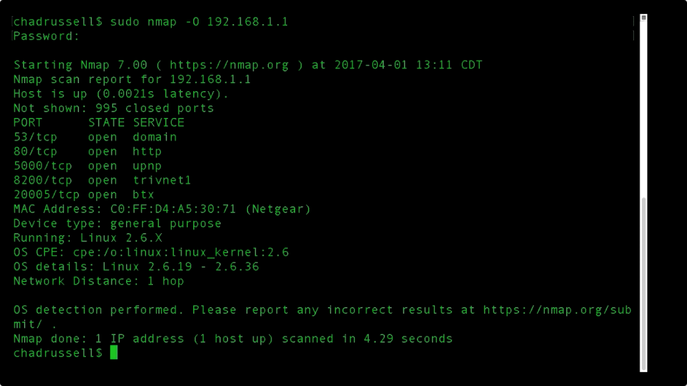
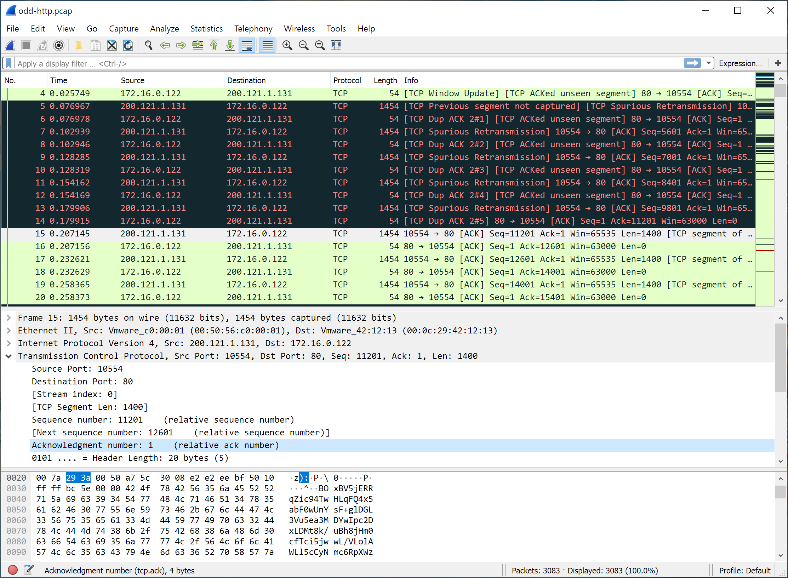
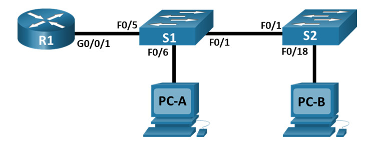

Network Design — Cisco Packet Tracer
Multi-branch enterprise topology with switching, routing, and VLAN segmentation.
Networking
Cisco PTVLANDHCPOSPF
Skills: network design, subnetting, routing.
Hands-on networking and security exercises. Filter by area.
Multi-branch enterprise topology with switching, routing, and VLAN segmentation.
Skills: network design, subnetting, routing.

Host discovery, service enumeration, and version detection against a controlled lab network.
Skills: reconnaissance, scripting, reporting.

Captured and dissected DNS, HTTP, and TLS traffic to identify anomalies and credentials in clear-text.
Skills: packet analysis, protocol understanding.

Simulated exhaustion of a DHCP pool in a lab and validated DHCP snooping mitigations on switches.
Skills: attack simulation, mitigation, hardening.

Designed inter-VLAN routing with 802.1Q trunks and validated isolation between departments.
Skills: VLANs, trunking, inter-VLAN routing.